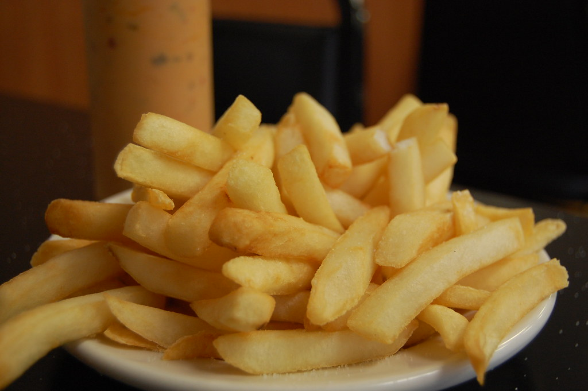

French Fries

Description
French fries are batonnet deep-fried potatoes, possibly
originating from France. They are prepared by cutting
potatoes into even strips, drying them, and frying them.
French fries are generally eaten as part of lunch or dinner,
or by themselves as a snack. They are often salted and
may be served with ketchup or other specialties.
Ingredients
- 2½ pounds russet potatoes, peeled
- 1 cup vegetable oil for frying
- 1 cup all-purpose flour
- 1 teaspoon garlic salt
- 1 teaspoon onion salt
- 1 teaspoon paprika
- 1 teaspoon salt
- ½ cup water, or as needed
Steps
- Preheat oven to 350 degrees F (175 degrees C). Line a
medium baking sheet with aluminum foil.
- In a medium skillet over medium high heat, stir
together ground beef, dry onion soup mix and dry minced
onion. Cook until beef is evenly brown. Remove from heat,
drain and stir in mayonnaise and Cheddar cheese.
- Slice tops off the dinner rolls. Arrange the rolls on
the baking sheet. Spoon some of the ground beef mixture
onto each roll. Garnish with pickle slices. Place tops
back on rolls.
- Tightly wrap the baking sheet with aluminum foil. Bake
in the preheated oven 20 minutes.